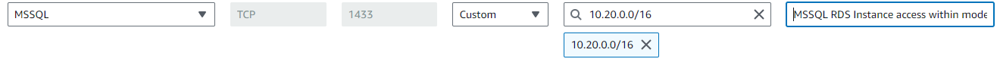
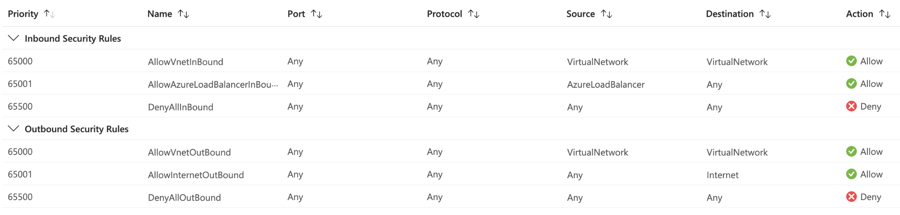

Provision the cloud environment with Terraform
This page covers how to use Terraform to provision the NBS 7 cloud environment in AWS or Azure. The Terraform code creates the network, the Kubernetes cluster, and the supporting services that the rest of this guide builds on. When you complete the steps on this page, substitute <cloud-provider> with aws or azure. The person who provisions this infrastructure should have operational knowledge of Terraform.
Before you begin, complete the general Prerequisites and the Cloud prerequisites.
On this page
- Validate database access
- Authenticate to your cloud provider
- Prepare Terraform files and configuration
- Run Terraform provisioning
- Connect to Kubernetes cluster
- Validate Kubernetes cluster readiness
- Save your Terraform code
- Next steps
Validate database access
Your NBS 7 environment requires access to your NBS 6 SQL Server database. Confirm this access before you run Terraform provisioning.
AWS
If your database is in Amazon RDS, review the inbound rules on the security groups attached to your database instance. Confirm that the Classless Inter-Domain Routing (CIDR) block you intend to use for your NBS 7 VPC (modern-cidr) is allowed to access the database. For example, if the modern-cidr is 10.20.0.0/16, at least one rule in a security group associated with your database must allow MSSQL inbound access from that block:

Azure
If your database is in Azure, in the same VNet as your NBS 7 environment, Azure allows all internal traffic within a VNet by default. To confirm, in the Azure Portal, go to the network security group attached to your database and confirm that the default inbound rules are present:

Alternatively, an inbound security rule on that network security group is sufficient if it allows port 1433, with the destination set to the VNet of your database and the source set to the IP addresses of your AKS cluster.
Self-managed SQL Server
If your database is not in Amazon RDS and not in Azure, for example a self-managed SQL Server instance on Amazon EC2 or on premises, confirm that Windows Firewall on the database server allows inbound traffic on TCP port 1433. Security group and network security group rules in your cloud environment do not open the host firewall.
Authenticate to your cloud provider
Terraform, kubectl, and Helm commands require an authenticated session with your cloud provider. This section requires the tools from Management workstation setup.
AWS
- Run the
aws configurecommand to authenticate to your AWS account. -
Confirm that you are authenticated by running the following command and verifying that it prints your account details. For more information, see the AWS CLI credential configuration guide.
$ aws sts get-caller-identity { "UserId": "AIDBZMOZ03E7R88J3DBTZ", "Account": "123456789012", "Arn": "arn:aws:iam::123456789012:user/lincolna" }
Azure
- Run the
az logincommand to authenticate to your Azure subscription. -
Confirm that you are authenticated by running the following command and verifying that it prints details of your subscription:
az account show
Prepare Terraform files and configuration
Complete these steps to download the infrastructure code and prepare your environment-specific Terraform files:
- Go to the NEDSS-Infrastructure v7.13.0 release page. Under Assets, download the
nbs-infrastructure-v7.13.0.zipfile. - Unzip the downloaded file.
-
Open a terminal and change into the top-level directory from the unzipped file:
cd nbs-infrastructure-v7.13.0 -
To hold your environment-specific configuration files, create a new directory in
terraform/<cloud-provider>/. Give the directory an easily identifiable name in the formatnbs7-<STLT>-<environment>:cd terraform/<cloud-provider> mkdir nbs7-mySTLT-test -
Copy the sample code from
terraform/<cloud-provider>/samples/into your new environment directory, and change into that directory:cp -pr samples/* ./nbs7-mySTLT-test cd nbs7-mySTLT-testThe samples contain a directory for each NBS 7 Terraform layer. Each directory name starts with a number that sets the order in which you apply the layers:
$ ls -F | sort 0-landing-zone/ 1-nbs7/ 2-applications/The README in the NEDSS-Infrastructure repository explains the layered Terraform design.
Skip the
1-nbs6layer. The Cloud prerequisites require an existing NBS 6 instance, so you do not provision one here. -
In each Terraform layer directory, update the
terraform.tfvarsandterraform.tffiles with your environment-specific values. The commentary in those files provides detailed instructions. Do not edit files in the individual Terraform modules.If you plan to deploy the Data Compare tool on AWS, enable the Data Compare resources in the
1-nbs7layer before you apply. The commentary in that layer’sterraform.tfvarsdescribes the setting and any values it requires. Terraform then creates the AWS Identity and Access Management (IAM) role (<eks-cluster-name>-datacompare-role) and S3 access policy that the Data Compare pods require. The role ARN is referenced during Data Compare deployment.
Run Terraform provisioning
For each Terraform layer directory, this section initializes the directory, generates an execution plan, and applies the changes. Repeat the following steps for each layer in your environment directory, in the numeric order of the directory names.
The following commands assume that you run Terraform authenticated to the same AWS account or Azure subscription that contains your existing NBS 6 application.
-
In a terminal, change to the Terraform layer directory that contains the
terraform.tfvarsandterraform.tffiles you updated in Prepare Terraform files and configuration:cd nbs-infrastructure-v7.13.0/terraform/<cloud-provider>/nbs7-<STLT>-<environment>/<number>-<layer-description> -
Initialize Terraform:
terraform init -
Generate an execution plan. The plan shows the changes that a corresponding
terraform applycommand would make to the resources in your cloud provider:terraform plan -out=tfplanThe command prints a summary line such as the following:
Plan: 142 to add, 0 to change, 0 to destroy.Carefully review the full plan output and verify that the changes exactly match your intention before you continue. If you change your Terraform code, if resources in your account or subscription change by other means, or if significant time passes during your review, rerun
terraform plan -out=tfplanand review it again. Use caution if you choose to runterraform apply -auto-approve, because it applies changes without review. -
Apply the changes from the plan:
terraform apply tfplanThe command prints a summary line, and its numbers should match the numbers from the plan summary:
Apply complete! Resources: 142 added, 0 changed, 0 destroyed. -
If the apply command prints errors, review and resolve the errors, then rerun the plan and apply steps.
Connect to Kubernetes cluster
This section requires an authenticated session from Authenticate to your cloud provider.
Run the command for your cloud provider to configure kubectl to connect to the Kubernetes cluster that Terraform provisioned:
-
AWS:
aws --region <REGION> eks update-kubeconfig --name <MANAGED_CLUSTER_NAME> -
Azure:
az aks get-credentials --resource-group <RESOURCE_GROUP_NAME> --name <MANAGED_CLUSTER_NAME>
If the command returns an error, verify that:
- Your cloud provider CLI installation works.
- Your authenticated session is still active.
- You used the correct cluster name, as shown in the Amazon EKS console or the Azure Portal.
Validate Kubernetes cluster readiness
-
Confirm core pods are running: Print the Kubernetes core infrastructure pods and verify that each pod has a
STATUSofRunning:kubectl get pods --namespace=kube-system -
Confirm nodes are ready: Verify that the Kubernetes worker nodes are registered and ready to run workloads. Each node should have a
STATUSofReady:kubectl get nodes
Both commands must work as expected before you continue. Amazon EKS and AKS provide troubleshooting guidance.
Save your Terraform code
Your nbs7-<STLT>-<environment> directory contains the terraform.tfvars and terraform.tf files that define your environment. You need this directory again for any future maintenance of the infrastructure you provisioned with Terraform. Save the directory somewhere you can retrieve it later.
Next steps
Continue to Deploy cluster services to deploy the core services and Keycloak.